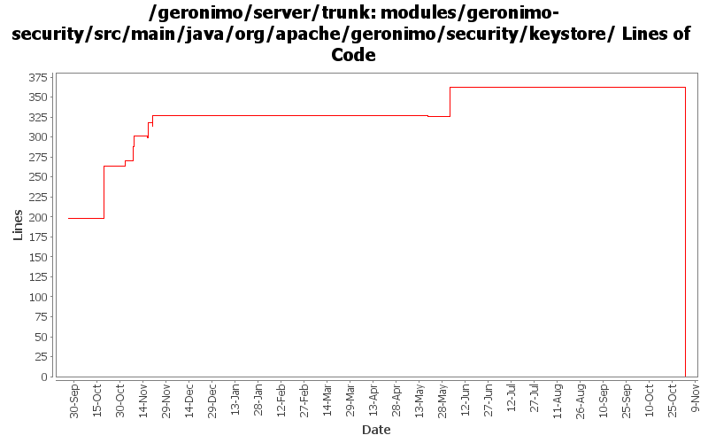

[root]/modules/geronimo-security/src/main/java/org/apache/geronimo/security/keystore

| Author | Changes | Lines of Code | Lines per Change |
|---|---|---|---|
| Totals | 23 (100.0%) | 408 (100.0%) | 17.7 |
| gnodet | 3 (13.0%) | 259 (63.5%) | 86.3 |
| vamsic007 | 7 (30.4%) | 82 (20.1%) | 11.7 |
| djencks | 1 (4.3%) | 39 (9.6%) | 39.0 |
| jlaskowski | 2 (8.7%) | 12 (2.9%) | 6.0 |
| rickmcguire | 2 (8.7%) | 11 (2.7%) | 5.5 |
| dwoods | 1 (4.3%) | 4 (1.0%) | 4.0 |
| akulshreshtha | 1 (4.3%) | 1 (0.2%) | 1.0 |
| prasad | 2 (8.7%) | 0 (0.0%) | 0.0 |
| kevan | 2 (8.7%) | 0 (0.0%) | 0.0 |
| adc | 2 (8.7%) | 0 (0.0%) | 0.0 |
GERONIMO-3565. Modules distributed amongst framework/modules and plugins
0 lines of code changed in 2 files:
GERONIMO-3246 Cleanup exception handling so stack traces for first failures are not discarded.
11 lines of code changed in 2 files:
GERONIMO-3034 GERONIMO-2655 New SelectChannel and AJP connectors. Also hook the connectors up to our thread pool
39 lines of code changed in 1 file:
GERONIMO-3142 Server fails to startup under Sun Java 1.6 update 1. Applied the patch from Toby and verified that the Tomcat JEE5 assembly built with Sun 1.5.0_11 starts with both the Sun 1.5.0_11 and Sun 1.6.0_01 JDKs.
4 lines of code changed in 1 file:
GERONIMO-3011 Resolve artifact_aliases.properties and keystores relative to GERONIMO_BASE
1 lines of code changed in 1 file:
GERONIMO-2587 FileKeystoreInstance.loadKeystoreData() results in inconsistent state if wrong password is supplied
17 lines of code changed in 1 file:
GERONIMO-2586 KeystorePortlet: Unlock keystore for availability shows key aliases only when keystore is unlocked for edit
o Required for unlock to be successful
6 lines of code changed in 1 file:
GERONIMO-2585 KeystorePortlet: Lock keystore throws NullPointerException
0 lines of code changed in 1 file:
GERONIMO-2413 Add a Certification Authority (CA) portlet to Geronimo console
19 lines of code changed in 1 file:
GERONIMO-2537 Update the src headers in server/trunk/modules to be compliant with the new ASF src header and copyright policy (http://www.apache.org/legal/src-headers.html). I also did some cleanup of the src headers and tried to make them all a consistent format
0 lines of code changed in 2 files:
GERONIMO-2431 generateCSR reverses the attribute sequence in subject name
14 lines of code changed in 1 file:
GERONIMO-2280 FileKeystoreInstance.getKeyManager() fails when there is more than one privatekey in the store
19 lines of code changed in 1 file:
Partial fix for GERONIMO-2537 All Geronimo source files must be brought in line with the new ASF source header and copyright notice policy
The modules directory is supposed to be migrated. There're some issues with some files, but they'll be handled manually
12 lines of code changed in 2 files:
GERONIMO-2443 Import CA reply should match the public key in the keystore with that in the certificate from CA.
7 lines of code changed in 1 file:
GERONIMO-2504: Allow all read-only operations on KeystoreInstance to be available to services
259 lines of code changed in 3 files:
GERONIMO-2279 FileKeyStoreInstance: Does not save keyPasswords after removing an entry
0 lines of code changed in 2 files: